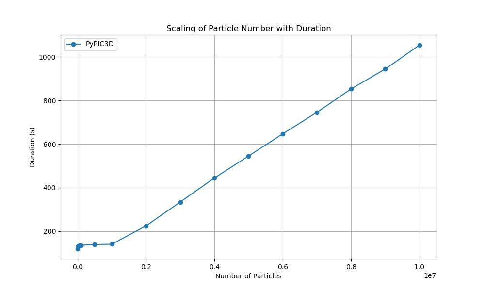

Computational Experiments¶
PyPIC3D provides a framework for managing and executing computational experiments. The Experiments class is designed to execute individual computational experiments using the epyc framework. It provides a structured way to define, run, and analyze experiments. The ParameterScan class is designed to perform parameter scans over a range of values for computational experiments. It leverages the epyc framework to systematically vary parameters and collect results.
Usage¶
To use the ParameterScan class, you need to create an instance of the ParameterScan class and provide the necessary parameters. Here is an example of how you might use the ParameterScan class to perform a parameter scan:
base_config = toml.load(config_file)
# Define the parameter scan
param_scan = ParameterScan(
name="particle_scaling_experiment",
run_dir="particle_scaling",
base_config=base_config,
section="particle1",
param_name="N_particles",
param_values=[1000, 5000, 10000, 50000, 100000, 500000, 1000000, 2000000, 3000000, 4000000, 5000000, 6000000, 7000000, 8000000, 9000000, 10000000]
)
parameters = param_scan.parameters()
durations = []
values = []
# Run the experiment
for parameter, value in parameters:
experiment = param_scan.build(parameter)
results = experiment.run()
# get the results of the experiment
durations.append(results["duration"])
# log the time taken for each experiment
values.append(value)
# log the values of the parameter
with open("particle_scaling/durations.txt", "w") as f:
for value, duration in zip(values, durations):
f.write(f"{value} {duration}\n")
The example above was used to perform a particle scaling experiment with PyPIC3D to analyze its performance for large numbers of particles. The experiment was conducted on a electron species contained within a 0.1m x 0.1m x 0.1m domain. The experiment was run on a single node with 1 core.
{kind=link}
This experiment will be compared to results from OSIRIS, an open source PIC code developed by UCLA.